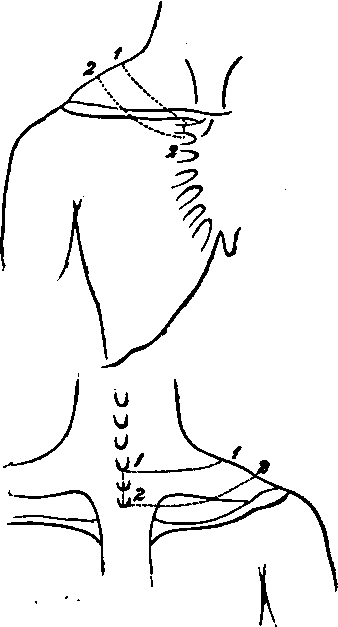

A Dissection To Expose Fully The First Dorsal Nerve
Description
This section is from the book "A Manual Of Dissections Of The Human Body", by R. E. Carrington. Also available from Amazon: A manual of dissections of the human body.
A Dissection To Expose Fully The First Dorsal Nerve
Position
The body is to be supported by blocks upon the opposite shoulder to that on which the dissection is to be made. The shoulder to be well pulled down.
I. Skin Incisions
A semilunar flap of skin, following the course of the first rib, is to be removed by the following incisions:—
1. From the seventh Cervical spinous process, to the lower border of the inner end of the Clavicle at its articulation with the Sternum.
2. From the second Dorsal spinous process, to the upper border of the second Costal cartilage at the Sternum.
3. Vertical incisions joining the anterior and posterior ends of the preceding.
The flap thus removed will cross in front the middle third of the Clavicle.
There will now be exposed the superficial fascia, containing, passing from before backwards—
1. The Platysma myoides muscle over the Clavicle.
2. Arterial twigs over the Clavicle from the Suprascapular. In the body dissected a branch from the Acromio-thoracic artery ascended over the bone.
3. A communication over the Clavicle between the Cephalic and the External Jugular veins.
4. The descending cutaneous branches of the Cervical plexus. The Supra-sternal branch oyer the inner end, and the Supra-clavicular over the middle of the Clavicle. The upper part of the Supra-acromial branches.
No. 5.
5. The first Anterior Cutaneous nerve, artery, and vein.
6. The branch of communication from the Supra-clavicular to the second Anterior Cutaneous nerve. In this case it was with the first, and therefore the junction was seen.
7. By the side of the first Dorsal spine, the internal branch of the posterior primary division of the first Dorsal nerve, with its corresponding artery and a radicle of the Dorsi-spinal veins.
II
Remove the preceding structures and the fascia lata, and expose—
1. The Sterno-mastoideus muscle passing down to the inner third of the Clavicle, only a small portion of the outer border being seen.
2. Below this the Pectoralis major muscle, corresponding to the inner half of the same bone.
3. Posteriorly, and also at the outer side of the front aspect, the Trapezius muscle.
III
a. Within the limits of the skin incisions divide and remove the Pectoralis major muscle in front, and with it, branches of the External Anterior Thoracic nerve.
b. Take away the portion of the Trapezius muscle exposed in the dissection. With it will be divided—
1. Branches of the Superficial Cervical artery and vein.
2. The Posterior Jugular vein.
3. Portions of the Spinal-accessory, and third and fourth Cervical nerves.
There will now be exposed, passing from before backwards—
1. A further portion of the inner end of the Clavicle.
2. Below this the fascia prolonged from the Pectoralis minor muscle, and the Costo-coracoid membrane and the structures perforating it, viz.:—
The Acromio-Thoracic artery.
The Cephalic vein, The External Anterior Thoracic nerve.
Perhaps a small branch of the Superior Thoracis artery.
3. Above the Clavicle the third part of the Subclavian artery.
4. The Transverse Cervical branch of the first portion of the same artery is seen higher up, but the Suprascapular offset is hidden by the Clavicle. Both these arteries have their veins with them.
5. Above the Subclavian artery are seen the cords of the Brachial plexus, and the following branches: The Supra-scapular, Posterior Thoracic, and the nerve to the Subclavius muscle.
6. Beneath the plexus and the Subclavian artery, the Scalenus medius and posticus muscles, the latter most external.
7. Still further back is seen the upper and inner angle of the Scapula, covered by the Supra-Spinatus muscle.
8. Ascending from the Scapula, and running upwards and forwards above the Brachial plexus, the posterior belly of the Omo-hyoid muscle.
9. The first digitation of the Serratus magnus muscle is seen, internal and posterior to this, above the upper border of the Scapula.
10. Still further back is the Levator anguli scapulæ muscle ascending from the angle.
11. Internal to it, and nearer the spine, the upper part of the Rhomboideus minor muscle.
12. The upper edge of the Serratus posticus superior muscle seen just above the Rhomboideus.
13. The Posterior Scapular artery, accompanied by its vein, is seen passing beneath the Levator anguli scapulæ muscle, having previously given a branch over the dorsum scapulæ. Its continuity with the Transverse Cervical artery beneath the Omo-hyoid muscle is traceable. 14. The nerve to the Rhomboid muscles lies between the Brhomboideus minor and Levator anguli Scapulæ muscles, and may be found if they are separated from one another.
IV
The dissection should now be commenced behind, and carried forwards.
a. Remove the exposed part of the Bhomboideus minor muscle. The Serratus posticus superior muscle is seen beneath it, and the Posterior Scapular artery and vein between the two.
b. Remove the Levator anguli scapulæ muscle within the limits of the dissection. The nerve to the Bhomboidei muscles will be seen beneath it.
c. Take away the exposed part of the Serratus posticus superior muscle, and remove at the same time the Posterior Scapular vessels, and the nerve to the Rhomboidei muscles. There will now be exposed, passing from the spinous processes outwards—
1. The tubercle of the first, and a considerable portion of the second rib.
2. The Splenius muscle in part, most internally.
3. The Transversalis colli muscle in part.
4. The Cervicalis ascendens muscle in part, seen passing upwards.
5. The second Levator costæ muscle passing from the transverse process of the first Dorsal vertebra downwards and outwards to the second rib, the external 1 branch of the posterior primary division of the first Dorsal nerve passing out external to it, and the internal division internally.
1 In two dissections I have found this to be the case. Both branches may however, be internal to the Levator costs muscle.
6. Still more externally the Scalenus posticus muscle. Passing from below are—
7. The upper tendon of the Musculus accessorius into the first rib.
8. The highest tendon of the Longissimus dorsi muscle when attached to the first rib.
V
a. Remove the preceding muscles as far as they are exposed in the dissection. In detaching the Transversalis colli muscle the Trachelo-mastoid will be found beneath it, and should be taken away at the same time. The second Levator costæ muscle may be retained in order to follow out more fully the nerves in relation with it.
There will now be exposed—
A portion of the Complexus muscle along the median line.
b. Remove this and there will be seen—
The Semispinalis muscle.
c. Take away this and there will come into view—
1. The Multifidus spinæ muscle.
2. Lying upon it the internal branches of the posterior primary divisions of the eighth Cervical and first Dorsal nerves.
d. Clear away the Multifidus spina muscle, and there will be seen—
1. The first rib at its inner part, the transverse process of the first Dorsal vertebra, and part of the second rib.
2. The posterior Costo-transverse ligament, between the first Dorsal transverse process and its rib.
3. The posterior part of the External Intercostal muscle.
e. Divide the first Dorsal transverse process at its root with the chisel. Cut through the first rib at its neck, and again external to its tubercle. Cut through the first anterior Costo-transverse ligament which runs downwards from the first Dorsal transverse process to the second rib. Remove the included portions of bone. The posterior and middle Costo-transverse ligaments of the first rib will be taken away at the same time. The Superior Intercostal artery, which lies upon the neck of the first rib, will be divided; but the Inferior Cervical ganglion of the Sympathetic, which is internal to it, will not come into view.
f. Remove now the exposed External Intercostal muscle, and The trunk of the first Dorsal nerve and its division into anterior and posterior primary branches will come into view.
VI
Continue now the dissection forwards in order to trace out fully the anterior primary branch.
a. Divide and remove the exposed portions of the Scalenus posticus, and Scalenus medius muscles. The latter muscle is taken away to trace the branch of the first Dorsal nerve which joins the eighth Cervical, b. Cut through the Clavicle in two places and remove its middle third with the Costo-coracoid membrane and the Subclavius muscle. c. Divide the Transversalis colli artery and vein, and the Supra-scapular artery and vein.
d. Cut through the cords of the Brachial plexus, and the Supra-scapular branch.
e. Remove the first digitation of the Serratus magnus muscle, the fascia over the External Intercostal muscle, and the remaining portion of the muscle itself.
The anterior primary branch of the nerve may now be fully traced.
N.B.—The nerve in the posterior part of its course lies underneath the first rib, and this must be lifted up, or better, the outer border may be chipped away to the necessary extent.
Continue to:
- prev: A Dissection To Expose The Hypoglossal Nerve In The Extra-Cranial Part Of Its Course
- Table of Contents
- next: A Dissection Of The Posterior Surface Of The Cord In The Cervical Region